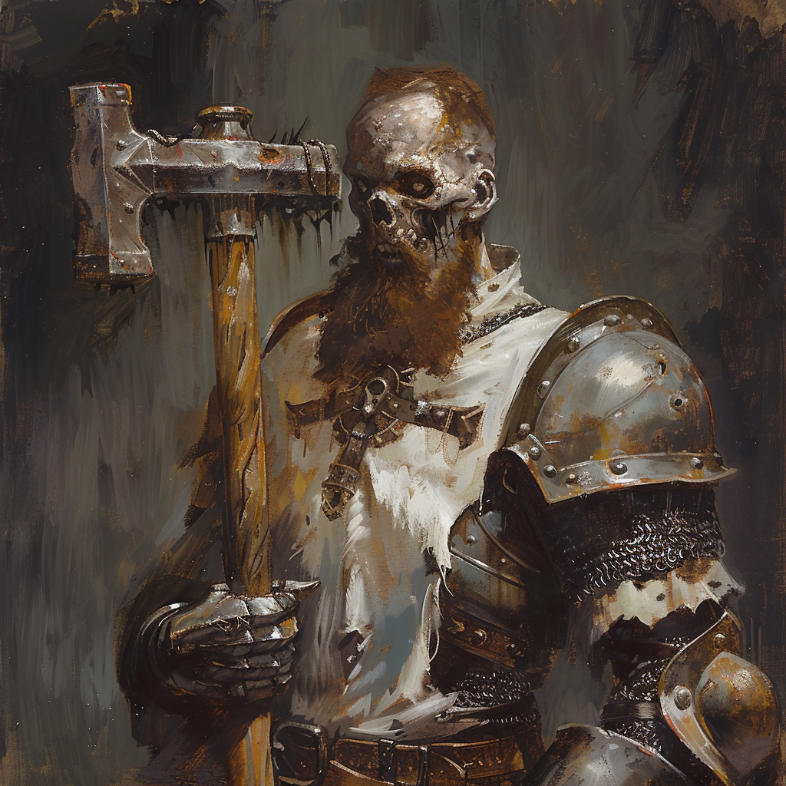

|  |
Sieur Robern Terayobern Teray, autrefois lieutenant de l'Ordre du Dragon d'Argent, était connu pour sa bravoure, son intelligence au combat et sa stature musclée et imposante. Tombé au combat lors de la bataille des collines de Balinok, son esprit ne trouve pas la paix. Le jour de sa mort, il a laissé derrière lui une femme enceinte. Robern nous a confié, avec une profonde tristesse, son regret de ne jamais avoir vu le visage de son fils. |